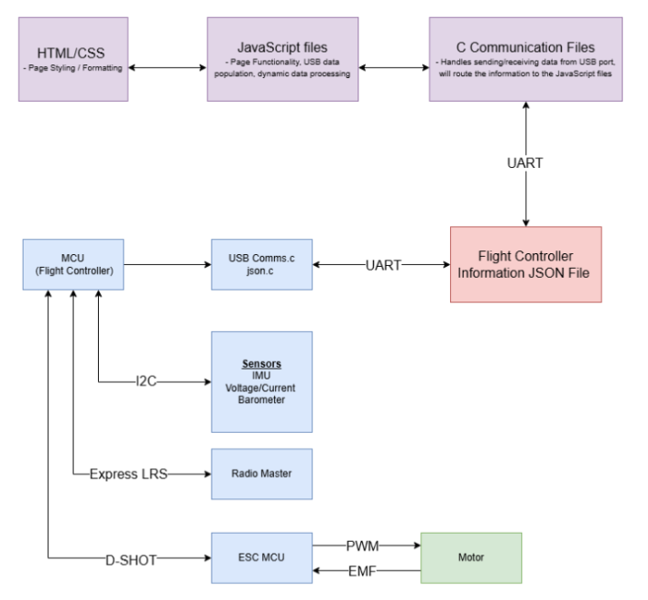

Frontend USB Communication
Data Flow
Overview
This section will provide information about the USB communication and data flow. For actual implementation steps involving the C module we will be implementing, check out the Backend USB Communication section. This Data Flow section, however, will be the same across both pages. This document will focus more on the JavaScript side of things. We will start by going over the overall flow of the data.
Communication Flow & Diagram
The USB communication system consists of three major layers:
- Desktop Application (Electron / JavaScript)
- Native Communication Layer (C module using libserialport)
- Flight Controller Firmware (MCU)
Each layer has a defined role in the communication pipeline. Commands originate from the desktop application, are
transmitted through the native C module using UART over USB, processed by the firmware, and then a response is
returned following the same path in reverse.
The communication flow ensures that high-level application logic remains separated from low-level serial communication.
Command Transmission Flow (PC to Flight Controller)
- User Action in Desktop Application: A user interacts with the Electron UI (for example clicking a button to request battery information).
- JavaScript Calls Native Function: The JavaScript code calls an exposed API function through the Electron contextBridge.
- Node-API Bridge: The call is forwarded through Node-API to the compiled native module (serial_addon.node).
- Native C Module Builds Command: The native C code constructs the command packet:
- [CMD Header (0x800X)] + [Command Data]
- The packet is prepared as a byte array before transmission.
- USB UART Transmission: The C module sends the command through libserialport using the configured UART settings:
- 115200 baud
- 8 data bits
- no parity
- 1 stop bit
- Firmware Receives Command: The flight controller firmware reads the incoming bytes from the UART buffer.
- Command Parsing: The firmware extracts the first 2 bytes to determine the command ID.
- Example: 0x8009 → e_GetInitialValuesVolt
- Command Execution: The firmware processes the command by either:
- retrieving stored values
- updating configuration parameters
- requesting sensor data
Response Transmission Flow (Flight Controller to PC)
- Response Construction: After processing the command, the firmware constructs a response packet containing:
- [Response Header (0x500X)] + [JSON Data]
- JSON Creation: The firmware uses the cJSON library to construct a JSON object containing labeled data values.
- Serialize JSON: The JSON object is converted to a string using:
- cJSON_Print()
- Transmit Response: The response packet is transmitted back over USB UART to the PC.
- Native C Module Receives Data: The C module reads the incoming serial buffer using libserialport.
- Response Verification: The first two bytes are checked to confirm the response header.
- Pass Data to JavaScript: The received JSON string is forwarded through the Node-API layer to the Electron application.
- Application Parses JSON: The Electron application parses the JSON and updates the UI accordingly.
Flow Diagram

Native C Module
Overview
The native C module serves as the communication bridge between the Electron application and the flight controller hardware. It is responsible for:
- Constructing command packets
- Handling USB UART communication
- Verifying responses (CRC, headers, length)
- Returning structured JSON data to JavaScript
- Triggering and forwarding data streaming
This module is compiled as a Node.js addon using Node-API (N-API), allowing it to be called directly from JavaScript.
Streaming Data
Overview
In addition to standard request-response communication, the OSCAR Ground Station supports continuous data streaming from the flight controller.
This is primarily used for real-time telemetry, such as gyroscope orientation data, which must be updated frequently without requiring repeated
manual requests from the user.
Unlike discrete commands (such as populateAll or updateValue), streaming operates continuously in the background and pushes updates
to the frontend as new data becomes available.
Streaming Flow
The streaming pipeline is structured as follows:
- Renderer (UI) →
- ipcRenderer →
- Main Process →
- ipcMain →
- Worker Thread (Command Controller) →
- Streaming Thread (continuous data handler) →
- Native C Module (continuous serial read via libserialport) →
- Flight Controller
The native module maintains an active serial connection and continuously reads incoming telemetry data. This data is forwarded through the streaming thread, which parses and routes updates back through the Electron IPC system to the renderer process for UI updates.
Frontend
Native C Module - Frontend
High-Level Responsibilities
The module is designed to behave like a simple API with a few primary functions:
- populateAll(command) → Requests a full dataset from the firmware
- updateValue(command, payload) → Updates a single configuration value
- startStreaming(command) → Starts streaming requested information
- stopStreaming() → Triggers streaming to stop
- getNextStreamPacket() → Allows for polling between frontend and backend
These functions abstract away all low-level USB communication from the rest of the application.
Node-API Integration
To expose C functions to JavaScript, the module uses Node-API. Wrapper functions handle:
- Converting JavaScript strings into C strings
- Calling the underlying C logic
- Converting results back into JavaScript-compatible values
Example:
This allows the frontend to call:
without needing to understand any of the native implementation details.
Command Mapping
All commands are mapped from human-readable strings to protocol-specific hexadecimal headers:
Example mappings:
- "GetInitialValuesVolt" → 0x8009
- "MinCellVoltage" → 0x8003
This approach:
- Keeps JavaScript readable
- Centralizes protocol definitions in one place
- Makes adding new commands straightforward
Packet Structure
All communication follows a consistent packet format:

Note: For more information about the packet structure, view Firmware's USB Communication documentation.
CRC Validation
To ensure reliable communication, all packets use a CRC-16-CCITT checksum:
Validation occurs on:
- Outgoing packets (before sending)
- Incoming responses (before processing)
If the CRC check fails, the packet is discarded and retried.
Note: For more information about CRC validation, view Firmwares USB Communication documentation.
Port Discovery & Handshake
Before any communication occurs, the module automatically detects the correct COM port using the function:
This function:
- Iterates through all available COM ports
- Sends a handshake packet
- Waits for a valid acknowledgment
- Verifies CRC and packet structure
- Stores the verified port for future use
This allows the system to:
- Automatically connect to the correct device
- Avoid hardcoding port names
Command Execution Flow
Both populateAll and updateValue follow the same internal flow:
- Map command string → header
- Ensure port is verified
- Build packet
- Send packet via USB
- Wait for response
- Validate:
- Packet length
- Header
- CRC
- Extract JSON payload
- Return result to JavaScript
Note: For more information about Commands, view Firmwares USB Communication documentation.
Reliable Communication
To improve robustness, the module implements a retry mechanism:
If any of the following fail:
- Write operation
- Read operation
- CRC validation
- Header validation
The command is retried up to three times before returning an error.
Response Handling
After a successful read, the module extracts the JSON payload:
This skips:
- Header (2 bytes)
- Length (4 bytes)
The resulting JSON string is returned to JavaScript for parsing and UI updates.
Error Handling
Errors are handled at multiple levels:
- Invalid commands - return NULL
- Communication failures - return JSON error string
- CRC mismatch - retry
- Port not found - return user-friendly error
Preload & IPC Bridge
Inter-Process Communication
In Electron, communication between different parts of the application occurs through a system called Inter-Process Communication (IPC).
Electron applications run multiple processes simultaneously, primarily the main process and one or more renderer processes. The main
process manages the application lifecycle and system-level operations, while the renderer processes handle the graphical user interface.
Since these processes run separately, they cannot directly call each other's functions. Instead, they communicate through predefined
communication channels provided by Electron known as ipcMain and ipcRenderer. These modules allow messages to be sent between the main
process and renderer processes in a controlled manner.
IPC channels are bidirectional, meaning messages can be sent from the renderer process to the main process and vice versa. Electron
supports both synchronous and asynchronous communication through IPC. However, asynchronous communication is generally preferred because
it prevents the UI from freezing while waiting for operations to complete. In this project, IPC is used to separate UI functionality from
backend operations, such as USB communication and execution of the C addon. This ensures that any long-running operations do not interfere
with the responsiveness of the user interface.
ipcMain
The ipcMain module runs in the main process and is responsible for receiving messages from renderer processes. It acts as the central coordinator for backend operations within the Electron application. When the renderer sends a request through an IPC channel, ipcMain listens for that request and executes the appropriate functionality. In this project, ipcMain is responsible for forwarding requests to the backend worker that executes the native C addon used for USB communication. ipcMain typically registers handlers for specific message channels. When a request is received, the handler processes the request and returns the result to the renderer process.
ipcRenderer
The ipcRenderer module runs in the renderer process, which is responsible for displaying and updating the application's user interface. This module allows the renderer process to send messages to the main process and receive responses. When a user interacts with the UI, the renderer process uses ipcRenderer to send a request to the main process through a specific IPC channel. The renderer then waits for the main process to complete the requested operation and return the result. Because renderer processes should not have direct access to sensitive system resources, ipcRenderer acts as a controlled communication interface between the UI and backend functionality.
IPC Setup in Electron
IPC communication in Electron typically follows this sequence:
- The renderer process sends a request using ipcRenderer.
- The main process receives the request using ipcMain.
- The main process executes the requested functionality or forwards it to another module.
- The result is returned to the renderer process through the IPC channel.
In this project, IPC is used to forward UI requests to a backend worker thread that communicates with the native C module responsible for USB communication. This architecture keeps the UI responsive while backend operations are executed asynchronously.
For additional details on Electron IPC implementation, refer to the following documentation:
- Electron Inter-Process Communication
- Electron ipcRenderer
- Electron ipcMain
Making the USB calls in JavaScript
Once the C module is configured so that JavaScript can call its functions, several additional steps are required so that the Electron
application can access these functions safely. These steps include loading the native C addon, exposing the necessary functions to the
renderer process, and ensuring that all calls are performed asynchronously so that the UI remains responsive.
Communication between the renderer process and the main process in Electron is handled using ipcRenderer and ipcMain. The renderer
process initiates requests using ipcRenderer, and the main process receives and handles those requests using ipcMain.
To safely expose backend functionality to the renderer, Electron uses a preload script. The preload script runs in an isolated
context and uses the contextBridge API to expose a controlled interface to the renderer process. This is done using the following code:
contextBridge.exposeInMainWorld("backendAPI", {
populateAll: (command) => {
return ipcRenderer.invoke("populateAll", command);
},
updateValue: (command, payload) => {
return ipcRenderer.invoke("updateValue", command, payload);
}
});
This code exposes a backendAPI object to the renderer process, allowing UI scripts to call backend functions without directly accessing Node.js or
the C module. Instead, requests are sent to the main process using ipcRenderer.invoke().
In the main process, ipcMain listens for these requests and forwards them to the backend worker responsible for executing the native C
addon. Since the main process is responsible for coordinating backend operations, it does not need to directly expose the C module to the renderer.
The following code demonstrates how the main process handles a request:
return await runAddonInWorker("updateValue", [command, payload]);
});
This handler allows the request to be processed asynchronously, preventing the main UI thread from becoming unresponsive while the C addon
performs USB communication. The runAddonInWorker function executes
the requested operation in a worker thread, which handles the interaction with the C module and returns the result once the operation is complete.
After the worker thread finishes executing the request, the result is returned to ipcMain, which then sends the response back to the
renderer process through the IPC system. The renderer can then update the UI based on the returned data.
Streaming Data - Frontend
Architecture & Threading
To maintain a responsive user interface, streaming is handled on separate worker threads in both the Electron (JavaScript) layer and the native C module.
This separation is critical because:
- Streaming requires continuous reads from the serial port
- Blocking operations would freeze the UI if executed on the main thread
- High-frequency updates must not interfere with user-triggered requests
Stream Initialization
Before streaming can begin, the application must explicitly start a streaming session. This is typically triggered when:
- The user opens a telemetry-dependent view (e.g., Setup tab)
- The application finishes initial device handshake
- The backend confirms a valid serial connection
The initialization flow is as follows:
- Renderer requests stream start via IPC
- Main process forwards request to worker thread
- Worker thread instructs native module to enter streaming mode
- Native module begins continuous serial reads
- Parsed telemetry data is emitted back through the IPC pipeline
Example call from renderer:
Example IPC handler in main process:
const result = await runAddonInWorker("startStreaming", [command]);
const senderWindow = BrowserWindow.fromWebContents(event.sender);
let polling = true;
async function poll() {
if (!polling) return;
const packet = await runInStreamWorker("getNextStreamPacket", []);
if (packet && senderWindow) {
senderWindow.webContents.send("streamData", packet);
}
setTimeout(poll, 16);
}
streamPollInterval = () => { polling = false; };
poll();
return result;
});
Native Streaming Mode
Within the native C module, streaming mode differs from standard command execution. Instead of:
- Sending a command
- Waiting for a response
- Exiting the function
The stream mode:
- Opens a persistent read loop
- Continuously reads UART buffer data
- Parses packets as they arrive
- Pushes valid telemetry frames upward
Streaming Loop Behavior
The stream thread operates using a blocking or semi-blocking serial read loop:
- Reads raw bytes from libserialport
- Accumulates bytes into a buffer
- Detects packet boundaries using headers
- Validates packet integrity (length + CRC)
- Extracts JSON payload
- Forwards structured data to Node-API callback
If a packet fails validation:
- It is discarded
- The stream continues without interruption
Thread Separation
On the JavaScript side, streaming is isolated from standard request-response logic using a dedicated worker thread. This ensures:
- UI requests (button clicks, settings updates) remain fast
- Streaming does not block IPC handlers
- High-frequency updates do not overload the main thread
The worker thread acts as a mediator between:
- IPC system
- Native addon
- Streaming event emitter
Streaming Data Delivery to Frontend
Once data is received in the Electron main process, it is pushed to the renderer using event-based IPC. Unlike request-response commands, streaming uses a push model, meaning:
- The frontend does not request updates
- The backend continuously emits updates
Example (main → renderer):
Example (renderer listener):
console.log(Date.now(), "W:", packet.Quaternions?.W,
"X:", packet.Quaternions?.X,
"Y:", packet.Quaternions?.Y,
"Z:", packet.Quaternions?.Z);
});
Error Handling & Recovery - Frontend
Streaming errors are handled gracefully to ensure continuous operation. Common failure cases include:
- USB disconnection during stream
- Corrupted packets or CRC mismatch
- Buffer overflow due to missed reads
Recovery strategies:
- Automatic stream restart on reconnection
- Silent discard of invalid packets
- Worker thread restart if stream loop fails
- Fallback to request-response mode if streaming is unavailable
UI Integration
How Response Data is Fed into the UI
After the renderer process receives data from the backend through IPC, the next step is updating the user interface. The data returned from
the native C module is structured as JSON and passed back through the IPC system to the renderer process.
In this implementation, the renderer does not manually map each field. Instead, it dynamically maps data to UI
elements using HTML data-* attributes.
When the page loads, the renderer requests all relevant values:
The response contains a structured objects like:
This object is then passed into two different helper functions:
- populateSettings(data.VoltagePageValues);
- updateTelemetry(data.VoltagePageValues);
Settings Population
All input and select elements that contain a data-setting attribute are automatically updated:
const key = el.dataset.setting;
if (data[key] !== undefined) {
if (el.tagName === "SELECT") {
setDropdownByText(el, String(data[key]));
} else {
el.value = String(data[key]);
}
}
});
Telemetry Display
Display-only values use the data-telemetry attribute:
const key = el.dataset.telemetry;
if (data[key] !== undefined) {
el.textContent = data[key];
}
});
Boolean values are also normalized into user-friendly text such as "Yes" and "No". This design allows:
- Minimal hardcoded UI logic
- Easy scalability when adding new fields
- Direct mapping between firmware JSON keys and UI elements
Event-Based Updates
The UI follows an event-driven model where updates occur in response to user interaction rather than continuous polling.
When the page loads:
refreshBackendStatus();
attachUpdateListeners();
});
User interactions are handled through change event listeners attached to all elements with data-setting:
debouncedUpdate(el);
});
When a value changes:
- The new value is captured
- A debounced update is triggered
- The update is sent to the backend
Debouncing
To prevent flooding the USB connection with rapid updates (such as holding a key on a number input), updates are debounced with a 300 ms delay:
Change Detection
To avoid redundant communication, the last sent value is stored and compared:
This ensures that only meaningful changes are transmitted to the hardware.
Error Handling & Recovery
Error handling is implemented across both the frontend and backend to ensure system stability.
Frontend Error Handling
After sending a request, the renderer checks for error responses:
showError(response.ERROR);
return;
}
This allows the UI to:
- Display meaningful error messages
- Prevent invalid UI updates
- Keep the application stable
Error Propagation to Backend
The native C module returns structured error responses when failures occur, such as:
These errors propagate by going through:
- C Module → Worker Thread → ipcMain → ipcRenderer → UI
Communication Failure Handling
Failures may occur due to:
- Device disconnection
- Invalid or corrupted packets (CRC failure)
- Timeout while reading from the serial port
The C module handles these by:
- Retrying failed transmissions (up to 3 attempts)
- Validating packet length and CRC
- Returning an error if all retries fail
Recovery Strategies
When an error occurs, the system supports recovery through:
- Reattempting user actions (retrying updates)
- Allowing reconnection of the device
- Refreshing UI state via populateAll()
- Preventing stale or invalid data from being displayed